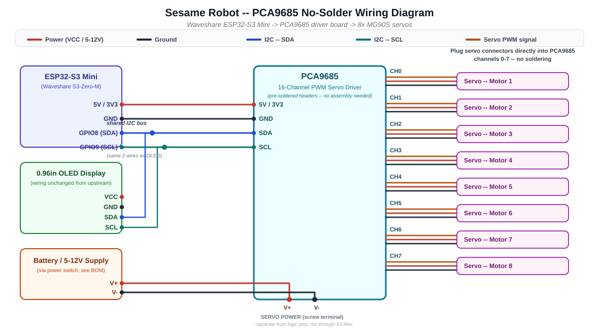
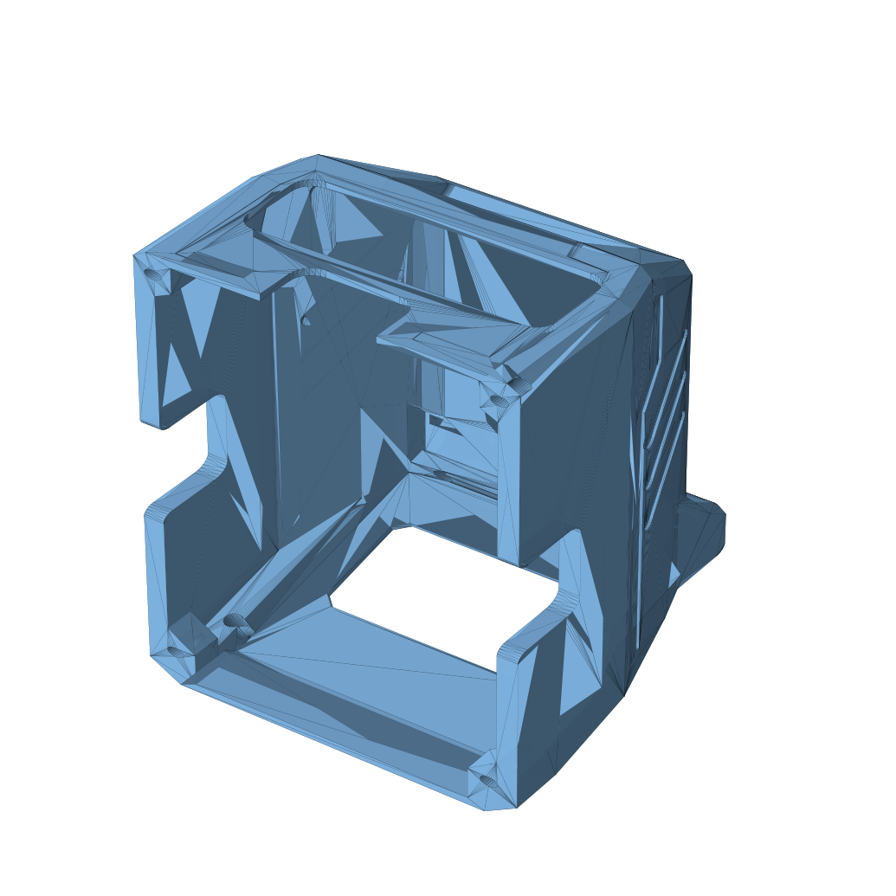

Build Sesame without soldering a 3×8 pin block by hand.
This fork replaces the hardest step in the hand-wired build — hand-bridging power and ground across eight tightly-packed servo headers — with a single pre-assembled driver board. Servos just plug in.
ESP32-S3-Zero-M (pre-soldered) PCA9685 Driver Board ~$14 CAD extra part Zero servo soldering
The stock build asks a lot of your soldering iron
The upstream mini-board guide is genuinely well designed — but one step trips up a lot of first-time builders.
The stock approach
"Solder one wire to one end of the pins, then guide it along and remove the insulation. Solder this exposed wire to every middle pin (this creates the 5V rail). Do the same for the ground lane." — upstream wiring guide
- 8 servo headers packed side-by-side on protoboard
- One bare wire laid across all 8 power pins, soldered in one pass
- Same again for ground, plus 8 individual signal wires
- No third hand to hold the wire still while it melts
This fork's approach
- Buy a $14 CAD PCA9685 driver board — headers already soldered at the factory
- Plug all 8 servo connectors straight into it
- Connect 4 wires (I2C) from the S3 Mini to the driver board
- With the pre-soldered S3-Zero-M: zero soldering
PCA9685 16-Channel PWM Servo Driver
A small, extremely common hobby-robotics board. It already has 16 sets of pre-soldered 3-pin male headers, and talks to the microcontroller over the same 2-wire I2C bus the OLED already uses.
→ Dorhea PCA9685 16 Channel 12-Bit PWM Servo Driver Board (Amazon.ca)
What changed vs. upstream
| Area | Upstream | This fork |
|---|---|---|
| Servo connection | Solder 8× 3-pin headers + bus wires on protoboard | Plug servos into PCA9685 (pre-soldered) |
| MCU ↔ servo wiring | 8 individual GPIO pins, direct PWM | 4 wires total (I2C), shared bus with OLED |
| Firmware servo driver | ESP32Servo, direct .attach()/.write() |
Adafruit_PWMServoDriver over I2C |
| New parts needed | — | 1× PCA9685 board (~$14 CAD) |
| Parts no longer needed | — | Protoboard + breakaway headers (for servo wiring) |
Only 4 wires connect the two boards
Everything after that is push-fit servo connectors.

- Wire the OLED to the S3 Mini (GPIO8=SDA, GPIO9=SCL).
- Connect 4 wires from the S3 Mini to the PCA9685 (table above). SDA/SCL can tap the same wires already going to the OLED.
- Wire servo power (battery/5V) into the PCA9685's screw terminal — not through the S3 Mini.
- Plug each servo into channels 0–7 in order, matching "motor 1" → channel 0, etc.
- Flash the modified firmware included in this fork — everything else (Wi-Fi, web UI, API, Sesame Studio) behaves identically to upstream.
A small, contained firmware diff
Four spots in sesame-firmware-main.ino change. Motor numbering and
leg mapping are untouched, so animations, the web UI, and the JSON API all keep
working exactly as before.
- #include <ESP32Servo.h> + #include <Adafruit_PWMServoDriver.h> - Servo servos[8]; - const int servoPins[8] = {1, 2, 4, 6, 8, 10, 13, 14}; // GPIO pins + Adafruit_PWMServoDriver pwm = Adafruit_PWMServoDriver(); + const int servoPins[8] = {0, 1, 2, 3, 4, 5, 6, 7}; // PCA9685 channels setup() { - ESP32PWM::allocateTimer(...); servos[i].attach(servoPins[i], 732, 2929); + pwm.begin(); pwm.setPWMFreq(50); } setServoAngle(channel, angle) { - servos[channel].write(adjustedAngle); + pwm.setPWM(servoPins[channel], 0, usToTicks(pulseUs)); }
Requires the Adafruit PWM Servo Driver Library (Arduino Library
Manager) instead of ESP32Servo. Full firmware file lives in
firmware/sesame-firmware-main.ino in this repo.
Get started
Optional: print the "sunroof" top cover
A variant top cover with a 30x10mm cutout on the crown for PCA9685 connector/wire access. The internal cavity already fits the board fine without it -- this is for easy access, not a structural requirement. Fully parametric OpenSCAD source included if you want a different size.

Recommended: Waveshare ESP32-S3-Zero-M
No S2 Mini listing guarantees pre-soldered pins -- so this fork uses an S3 Mini instead. This listing explicitly guarantees pre-soldered headers, and it's a more capable dual-core chip to boot:
3x ESP32-S3-Zero-M -- $39.99 CAD (~$13.30 each)ESP32-S3FH4R2 dual-core 240MHz, 4MB flash / 2MB PSRAM, Wi-Fi + BLE 5, USB-C. I2C on GPIO8 (SDA) / GPIO9 (SCL) -- firmware already configured. Note: avoid GPIO21 (onboard RGB LED) despite some older Waveshare docs suggesting it.
⚡ Try the whole build in a simulator first
Run the real firmware on an emulated ESP32-S3 with 8 virtual servos, the PCA9685 driver, and the OLED face — drive walk/wave/dance from the Serial Monitor before wiring anything. Download the project file, then open it at velxio.dev.
Download sesame-pca9685.vlx PCA9685 chip source